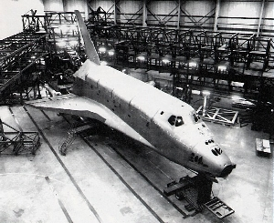

The first mission for the Challenger, it was also when the
first spacewalk during a space shuttle mission.

Y 1983
Sally Ride becomes first American woman in space.
Deployed two communications satellites aboard the Challenger.
Y 1983
Guion Bluford becomes first African-American in space along with
landing the Challenger in its first shuttle night launch and night landing.
Y 1984
First untethered spacewalk using the Manned Maneuvering Unit also the first to
deploy the WESTAR and Palapa B-2 communications satellites although unsuccessful.
Y 1984
The Challenger launched the first Solar Maximum Mission service mission, that would
measure the frequency of solar winds coming from the Sun.
Y 1984
The Challengers first mission to carry two women with one of them,
Kathryn D. Sullivan, becoming the first American woman to make a spacewalk.
This mission, the Challenger deployed Earth Radiation Budget Satellite.
Y 1985
The Challenger's third to last mission, to launch Spacelab-3
in Earth's orbit
Y 1985
Known as Deutschland-1, D-1 for short, was the first
joint mission with West Germany's Space Agency, along with the ESA.
Y 1986
The tenth mission for the Challenger, was unfortunately its last.
Due to freezing tempratures having an effect on the engines, the Challenger exploded
upon ascent, killing all seven members of the crew.